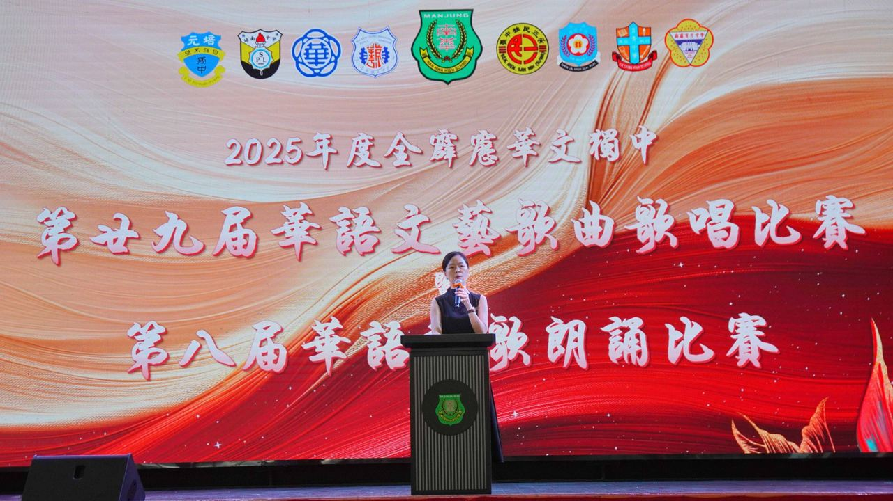
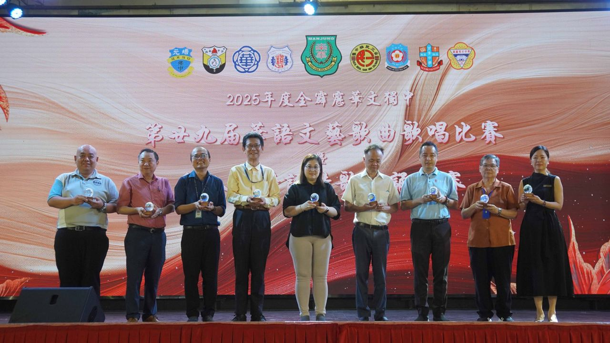
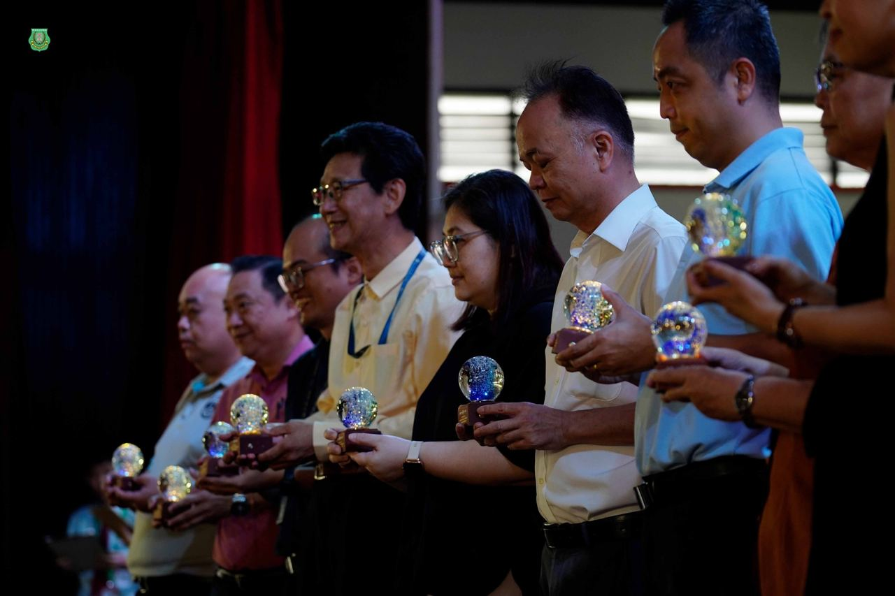
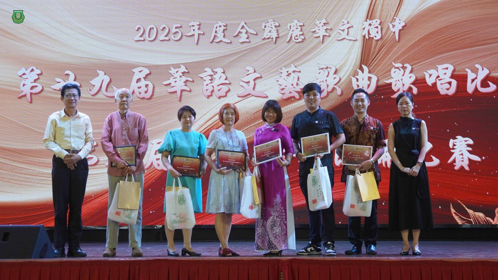
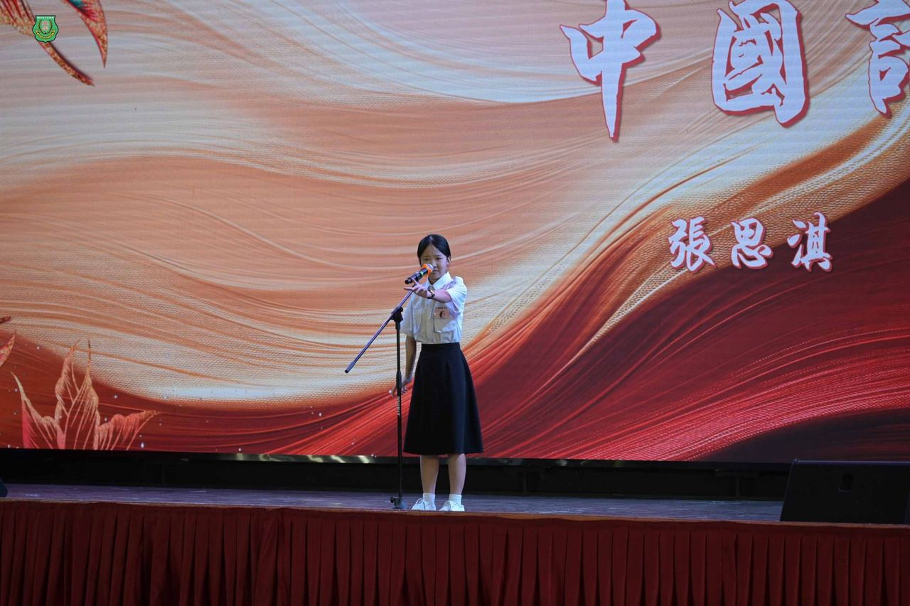
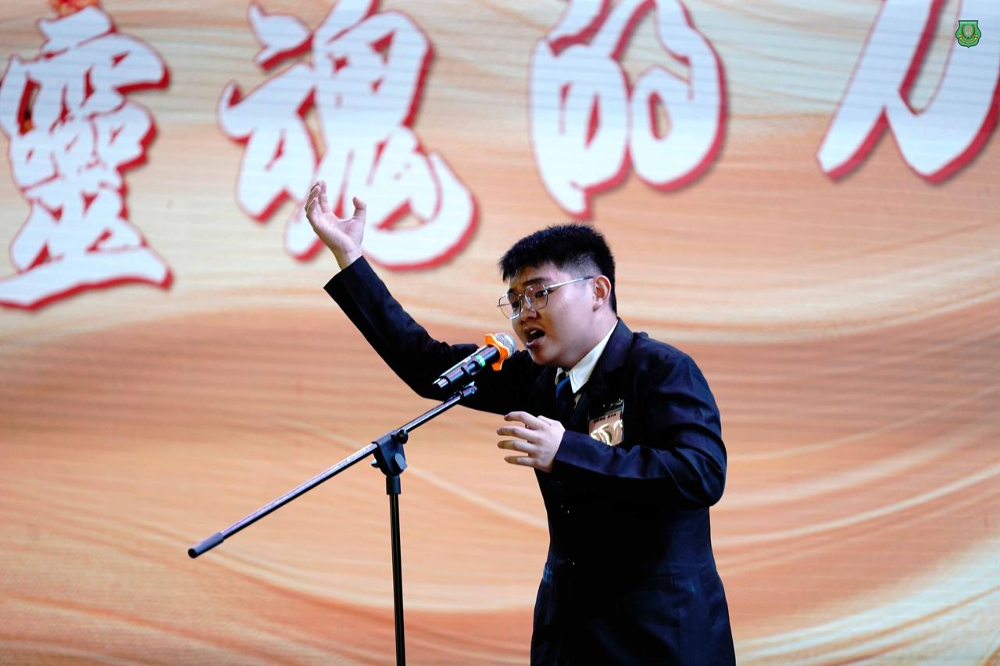
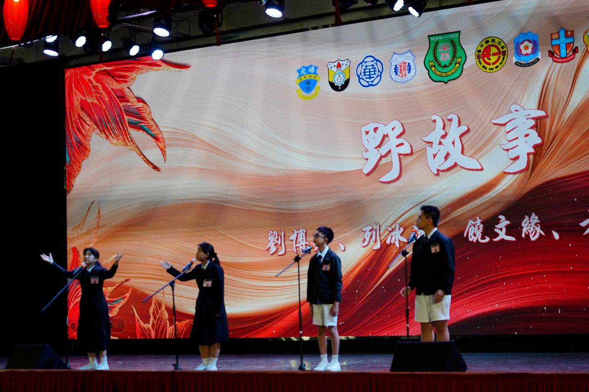
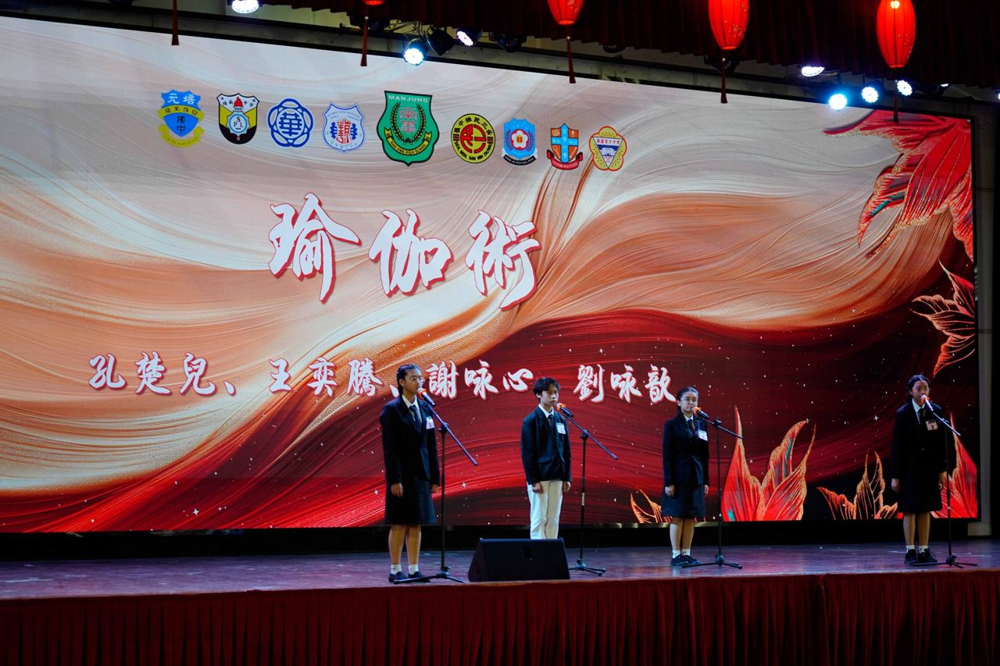

“诗与歌的盛宴”
“诗与歌的盛宴”
第二十九届华语艺术歌曲歌唱比赛暨
第八届诗歌朗诵比赛圆满落幕
由霹雳华校董事联合会主催，曼绒南华独立中学主办的第二十九届全霹雳华文独中华语艺术歌曲歌唱比赛暨第八届华语诗歌朗诵比赛，已于2025年5月8日（星期四）在南华校园圆满举行。来自霹雳州九所独中参赛选手齐聚一堂，以歌声与诗意展开一场美的较量。
点燃热忱，赋予声音以灵魂
主办校校长陈丽冰博士于致辞中表示，本次比赛的意义并不止于一时的竞赛与评分，更是一个发掘潜能的平台。“我们希望通过这个舞台，让每一位学生发现自身的潜能，点燃内心的热忱。在各校参赛者的朗诵与歌唱中，不仅听见了语言的力量，更看见了你们灵魂深处对美的追寻。未来的路或许复杂多变，但愿参赛者们始终不忘今日的初心，让诗意与旋律，成为你们一生的精神力量。正如泰戈尔所言：孩子的世界应是诗意的，因为他们是诗的本身。”陈校长的致辞深深触动在场师生，也为赛事定下了充满人文精神的基调。
本届歌唱比赛分为初中及高中，男、女四个组别。各校选派代表在钢琴伴奏下演绎中外艺术歌曲，现场高潮迭起，掌声不断。其中，怡保深斋中学表现尤为亮眼，不仅囊括高中男女生组双料冠军，更荣获最佳钢琴伴奏奖与团体总冠军称号，展现出极高的音乐素养与团队默契。
诗歌朗诵比赛则分为初中群朗与高中独朗两个组别，评审着重于语音、语调、表达技巧与选材。参赛作品题材广泛，既有传统意象，也不乏当代思考，每一场朗诵都是一场灵魂的对话，让听众在沉稳语调与诗句转换中感受到内在情感的涌动。成绩揭晓后，育才独中及班台育青中学在初高中组别中表现出色，分获冠军，获得满堂喝彩。以下为最终成绩：
华语文艺歌曲歌唱比赛
团体总冠军：深斋中学
初中男子组
冠军： 周伟则（霹雳育才独中）
亚军： 刘建法（怡保培南独中）
季军： 邹恺圣（金宝培元独中）
优秀奖：梁亦言（怡保深斋中学）张咏捷（班台育青中学）
初中女子组
冠军： 刘翊沁（怡保深斋中学）
亚军： 陈晓麦（安顺三民独中）
季军： 梁瑄芹（江沙崇华独中）
优秀奖：刘家如（金宝培元独中）周盈恩（霹雳育才独中）
高中男子组
冠军： 郑恩阳 （怡保深斋中学）
亚军： 苏文康 （霹雳育才独中）
季军： 翁林勇浚 （江沙崇华独中）
优秀奖：王弈皓（怡保培南独中）林奕帆（班台育青中学）
高中女子组 歌唱比赛
冠军： 郑静雯（怡保深斋中学）
亚军： 邓诗颖（江沙崇华独中）
季军： 刘彦彤（怡保培南独中）
优秀奖：周颖芯 （霹雳育才独中）钟嘉欣 （金宝培元独中）
最佳钢琴伴奏奖：刘子韵（深斋中学）
华语诗歌朗诵比赛
初中组
冠军：孔楚儿、王奕腾、谢咏心、刘咏歆 (育才独立中学)
亚军：蔡婧欣、吴昕妍、陈俞伊、陈婉晶 (班台育青中学)
季军：卢恩琪、邝亦娸、郑晞睿、李俽慧 (怡保深斋中学)
优秀奖
1. 吴珮嘉、朱以琳、马楚儿、王昱梅 (太平华联中学)
2. 卢靖恩、张恩童、李阮辉、杨恩慈 (江沙崇华独中)
高中组
冠军：张思淇 (班台育青中学)
亚军：孙毅劼 (金宝培元独中)
季军：陈家乐 (育才独立中学)
优秀奖
1. 刘子晴 (怡保培南独中)
2. 黄诗绚 (怡保深斋中学)







